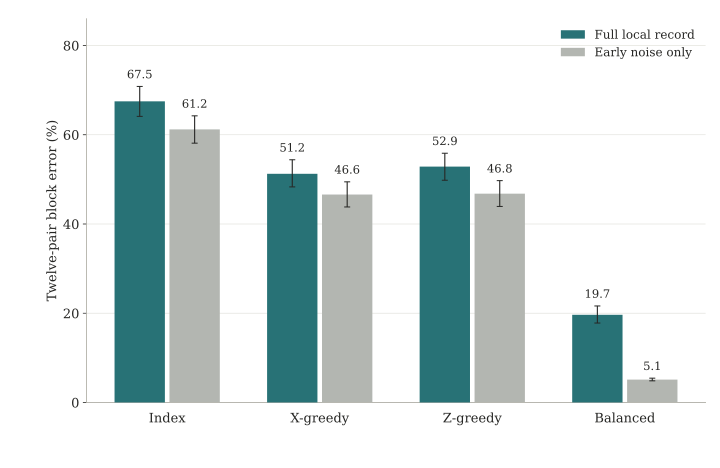

1. Error correction while entanglement arrives
Distributed quantum hardware creates entanglement probabilistically. Some Bell pairs are already waiting in memory while others have yet to arrive. This project asks what error correction can do while that process is still underway: which checks can be measured, what information their history supplies, and which logical ambiguities remain unavoidable.
The current theoretical focus is on-the-fly encoding. Arriving Bell pairs are assigned to positions in a fixed target CSS code, and a target check can be measured once all positions in its support are available. High-rate encoded distillation motivates this setting [1]. The assignment order controls when information about different errors first becomes accessible.
2. Availability limits information
A phase error cannot be diagnosed by checks that commute with it. A stored qubit may therefore accumulate uncertainty before its first sensitive check becomes available. Even after a shared check is measured, two possible fault locations can remain indistinguishable until a later check separates them. The causal measurement record determines which histories can be distinguished.
Earlier work in this direction characterizes the local syndrome information unavailable during a partially completed transversal CNOT. The current encoding problem asks a related question about entire fault histories as checks activate over time. Both make the intermediate measurement structure part of the design problem.
Current theoretical result. In the fixed-target, instantaneous-check model, uncertainty accumulated before the first sensitive measurements can be reduced to a finite logical-coset inference problem. Its optimal inference error gives a lower bound for every decoder that uses the allowed classical record to choose a Pauli frame. A complementary hidden-pair bound accounts for ambiguity that persists after a first shared check.
Logical-coset inference sums the probabilities of errors with the same logical effect, accounting for stabilizer degeneracy [2]. What is specific to the asynchronous setting is the reduction from a time-dependent measurement history with arrival-dependent noise probabilities. The present bounds assume independent Pauli memory noise, schedules determined by heralds, and no postselection.
3. Arrival order as a control: a BB72 example
For an independent one-sector Pauli memory process, the error probability after an unobserved interval θ is
Here p0 is the initial error probability in that sector and 1/T is its combined Bell-pair flip rate. An arrival schedule therefore controls noise: it sets how long each position waits before the first measurement sensitive to its errors.
The [[72,12,6]] bivariate bicycle code [3] provides a concrete scheduling test. The code encodes twelve logical Bell pairs. An X-greedy schedule prioritizes completing X checks, a Z-greedy schedule prioritizes Z checks, and a balanced schedule considers both types. Prioritizing one type can leave the other error sector exposed during assembly.

In this benchmark, balancing the check types reduces the twelve-pair block error from approximately 51–53% to 20%. The scheduling gap remains in the early-noise ablation, from about 47% to 5.1%. Separately, exact inference on selected 18-position witnesses gives decoder-independent lower bounds of 4.3–4.8% for the one-sector schedules and 0.079% for balanced scheduling. These witness bounds quantify an unavoidable component of error; they do not predict the simulated error rates or certify an optimal schedule.
Benchmark settings: 3% depolarizing input; equal pair-memory ratios RTZ = RTX = 300; check spacing Rτ = 1; independent readout-flip probability 10−3; six fully populated terminal rounds; and BP30/OSD7 decoding. The metric is the probability that at least one logical Bell correlation in the twelve-pair output block is wrong. It is not a per-pair infidelity. Checks are instantaneous in this phenomenological model.
4. From observability to a protocol
The bounds identify information that a better decoder cannot recover within the stated encoder class; they need not be tight. A schedule with no instantaneous hidden logical direction can still accumulate ambiguity across time. The completed code's distance and the number of available checks therefore provide only part of the picture.
The numerical example establishes a scheduling effect in a finite-size model with ideal terminal information. It does not establish a threshold or an advantage over alternative protected encoders. Ongoing work aims to tighten the bounds, choose schedules using accumulated uncertainty, and connect the analysis to explicit syndrome-extraction circuits and finite measurement records. Establishing practical fault tolerance also requires accounting for gate faults, measurement duration, communication delays, and the state actually delivered to the next operation.
References
J. P. Bonilla Ataides, H. Zhou, Q. Xu, G. Baranes, B. Li, M. D. Lukin, and L. Jiang. Constant-Overhead Fault-Tolerant Bell-Pair Distillation Using High-Rate Codes. Physical Review Letters 135, 130804 (2025). DOI · arXiv:2502.09542.
P. Iyer and D. Poulin. Hardness of decoding quantum stabilizer codes. IEEE Transactions on Information Theory 61, 5209–5223 (2015). DOI · arXiv:1310.3235.
S. Bravyi, A. W. Cross, J. M. Gambetta, D. Maslov, P. Rall, and T. J. Yoder. High-threshold and low-overhead fault-tolerant quantum memory. Nature 627, 778–782 (2024). DOI · arXiv:2308.07915.